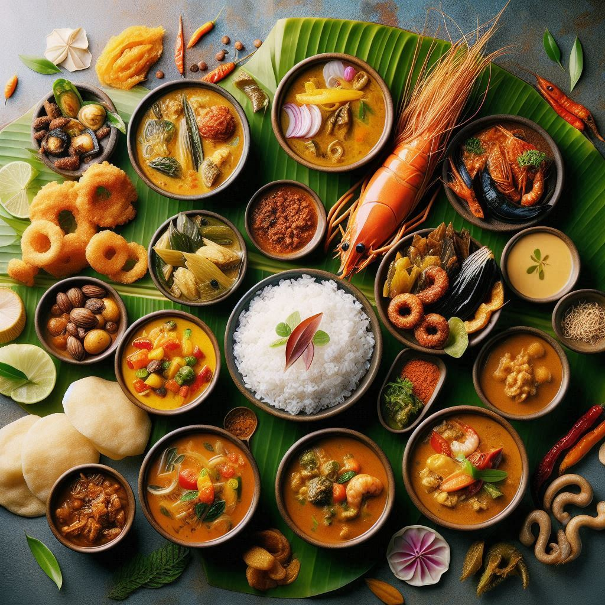
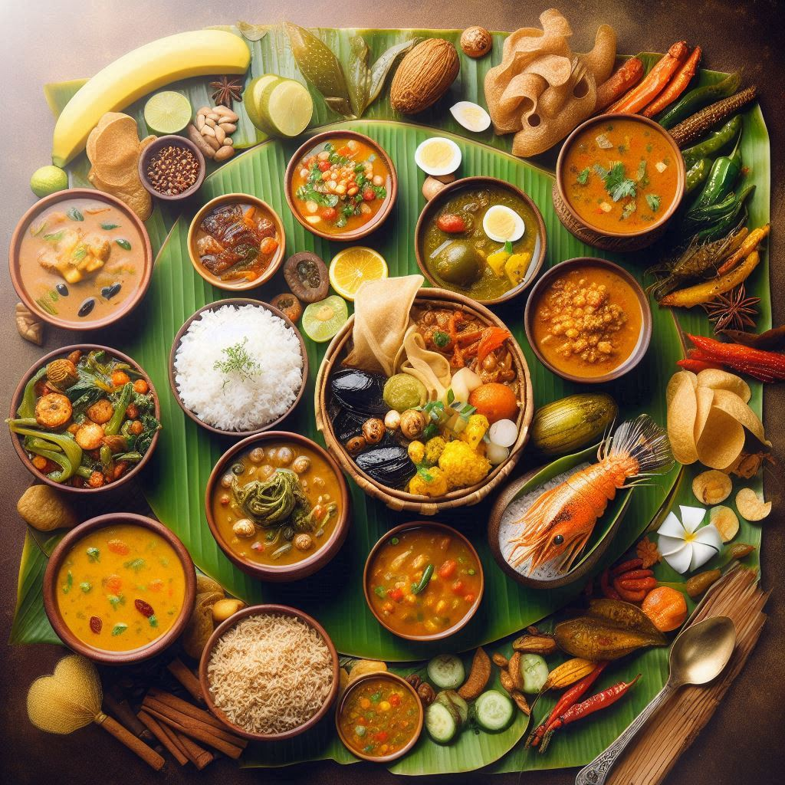

Kerala’s cuisine is a delightful blend of flavors, colors, and rich cultural traditions, influenced by its geography, history, and diverse communities. Known as the “Land of Spices,” Kerala’s food has always been a central aspect of its identity, offering a mix of vegetarian and non-vegetarian dishes prepared with coconut, rice, seafood, and a variety of spices.
1. Staple Foods
- Rice and Tapioca: Rice is the staple food of Kerala and is served in various forms, including steamed rice, Puttu (steamed rice flour and coconut logs), and Idiyappam (string hoppers). Tapioca, also known locally as Kappa, is another staple, often eaten with fish curry.
2. Famous Dishes
- Sadhya: A traditional Kerala feast, usually served on a banana leaf during festivals and special occasions like Onam. It consists of a variety of vegetarian dishes such as avial (vegetable mix with coconut), sambar, olan (pumpkin and coconut milk curry), kichadi, and rasam, accompanied by rice and concluded with a sweet dish called payasam (rice pudding).
- Appam and Stew: Appam, a type of rice pancake with a soft center and crispy edges, is typically paired with a coconut milk-based stew made with either vegetables or meat like chicken or mutton.
- Kerala Parotta and Beef Fry: The flaky, layered Kerala parotta, often served with spicy beef fry, is popular in restaurants and homes across the state.
3. Seafood Delicacies
- Fish Molee: A lightly spiced fish stew made with coconut milk and flavored with mild spices.
- Karimeen Pollichathu: Pearl spot fish marinated in spices, wrapped in banana leaves, and grilled to perfection.
- Meen Curry: A spicy red fish curry, often prepared with kudampuli (a type of tamarind), giving it a distinct tangy flavor.
- Kerala’s coastal cuisine offers a wide variety of prawns, crabs, squid, and mussels prepared in different styles.
4. Snacks
- Banana Chips and Jackfruit Chips: Made from thinly sliced banana or jackfruit, deep-fried, and often flavored with salt or jaggery syrup.
- Pazhampori (Banana Fritters): Ripe bananas are dipped in a sweet batter and deep-fried.
- Kuzhalappam and Achappam: Traditional crispy snacks made from rice flour.


5. Breakfast Delights
- Dosa and Idli: Served with chutney and sambar, these are popular throughout South India, including Kerala.
- Puttu and Kadala Curry: A combination of steamed rice cake and black chickpea curry.
6. Beverages
- Kerala Coffee and Tea: Kerala’s tea and coffee plantations produce aromatic and flavorful beverages enjoyed across the state.
- Toddy (Kallu): A locally tapped palm wine, toddy is a mildly alcoholic drink derived from coconut palms and enjoyed in toddy shops across Kerala.
7. Use of Coconut
- Coconut is an essential part of Kerala’s cuisine, used in various forms—grated, as coconut milk, or coconut oil—for cooking. The distinct flavor of coconut adds depth to most Kerala dishes.
8. Influence of Spices
- Kerala’s history as a major spice exporter has left a rich legacy in its cuisine. Spices like black pepper, cardamom, clove, cinnamon, and nutmeg add intense flavors to traditional dishes, making Kerala food aromatic and richly spiced.
Conclusion
Kerala’s cuisine reflects its diverse culture, rich history, and abundant natural resources. With a tantalizing mix of vegetarian and non-vegetarian dishes infused with spices and coconut flavors, it remains one of the most sought-after culinary experiences in India and beyond. Whether served on a banana leaf during festivals or as street food, Kerala’s cuisine is a feast for the senses.